Audit digitale toegankelijkheid van website joodsmonumentamersfoort.nl
Samenvatting
Wij hebben de website joodsmonumentamersfoort.nl onderzocht tussen 3 en 13 januari 2026. Op dit moment is een deel van de succescriteria als voldoende beoordeeld. In dit rapport lees je welke punten nog verbetering behoeven en hoe deze kunnen worden aangepakt.
Er is geen mogelijkheid om de herhalende blokken content die op elke pagina voorkomen over te slaan.
Er moet een manier zijn om delen van een pagina over te slaan, zoals het navigatiemenu dат op meerdere pagina’s terugkomt. Je gebruikt hier een skiplink voor. Daarmee kun je vaste blokken met herhalende inhoud overslaan. Een skiplink moet de eerste link op de pagina zijn. Deze link mag verborgen zijn, maar moet zichtbaar worden zodra hij focus krijgt.
Oplossing:
Voeg een skiplink toe waarmee bezoekers herhalende delen van de pagina over kunnen slaan.
Zorg dat de skiplink:
de eerste link op de pagina is;
visueel verborgen is, maar zichtbaar wordt bij toetsenbordfocus;
naar de hoofdcontent van de pagina springt als de bezoeker de link activeert.
Advies. Overweeg het toevoegen van extra skiplinks op de homepage om blokken content over te slaan, zoals een lijst met lampjes of een lijst met datums, omdat deze lijsten lang zijn. Zie https://www.w3.org/WAI/WCAG22/Techniques/general/G123.
#2 - Relatie tussen links in een groep is niet in HTML vastgelegd
Impact: Medium / AdviesType: TechniekWCAG: 1.3.1EN: 9.1.3.1
In het hoofdmenu staat een groep links die visueel als groep worden weergegeven, maar deze groepering wordt niet weerspiegeld in de HTML-structuur.
Als het voor ziende bezoekers duidelijk is dat links in het menu visueel als een groep zijn gegroepeerd, dan moet deze structuur ook in de HTML-code aanwezig zijn.
Oplossing:
Neem de links van het menu op in een ul-element.
#3 - Link is niet met stem te bedienen
Impact: GrootType: TechniekWCAG: 2.5.3EN: 9.2.5.3
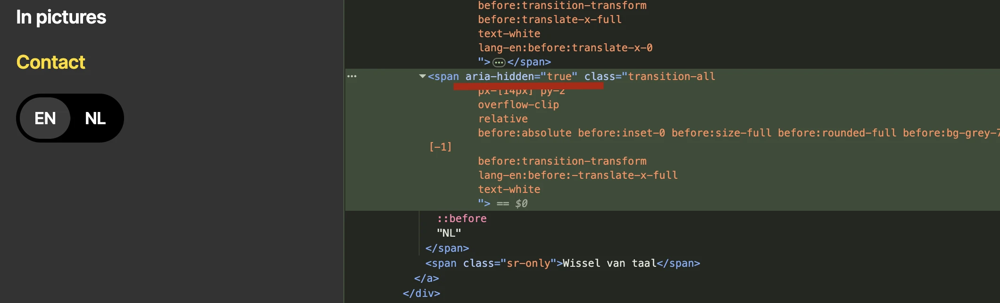
In het hoofdmenu staat een schakelknop om van taal te wisselen. Deze knop is geprogrammeerd als een a-element. De zichtbare tekst is “EN NL”. De toegankelijke naam van de link is “switch language” of “wissel van taal”. Omdat de zichtbare tekst verschilt van de toegankelijke naam, is deze link niet met stem te bedienen.
Oplossing:
Voeg zichtbare tekst aan de toegankelijke naam toe, het liefst vooraan
zoals "NL, kies Nederalnds” of “EN, choose English”. Verwijder aria-hidden op de tekst (EN ov NL) die relevant is.
Link naar pagina: https://joodsmonumentamersfoort.nl/
#4 - Relatie tussen elementen ontbreekt in de HTML
Impact: Medium / AdviesType: TechniekWCAG: 1.3.1EN: 9.1.3.1
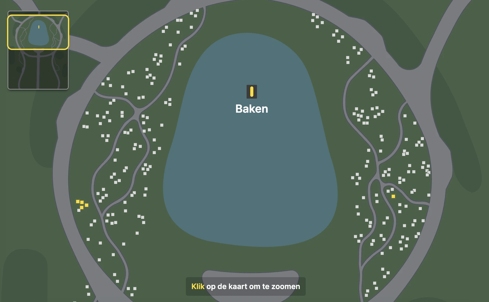
Op deze pagina zijn de lichtjes verdeeld over verschillende gebieden op de plattegrond. Een ziende bezoeker ziet deze gebieden op de plattegrond en de positie van het baken. De locatie van een lichtje is niet toegankelijk voor een blinde bezoeker.
Oplossing:
Er is een gebruikerstest nodig om te verifiëren of dit inderdaad een probleem is en hoe dit probleem kan worden opgelost. Een van de mogelijke oplossingen zou kunnen zijn om de gebieden op de plattegrond codes te geven en deze codes bij de lichtjes te vermelden.
#5 - Elementen die toetsenbordfocus krijgen zijn bedekt door de kalender
Impact: GrootType: TechniekWCAG: 2.4.11
Op deze pagina bedekt de kalender een deel van de kaart. Terwijl knoppen op de kaart nog steeds toetsenbordfocus krijgen, is de focus indicator verborgen achter de kalender. Hierdoor kunnen toetsenbord gebruikers niet zien waar de focus is.
Oplossing:
Beperk focus alleen tot zichtbare elementen.
#6 - Knoppen kunnen niet worden bediend met spatiebalk en Enter-toets
Impact: GrootType: TechniekWCAG: 2.1.1EN: 9.2.1.1
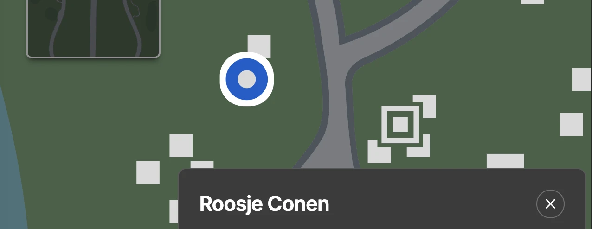
Op deze pagina zijn de knoppen voor de lichten en het baken niet toegankelijk via het toetsenbord. Ze kunnen niet geactiveerd worden met de spatiebalk of de Enter-toets. Alle interactieve elementen moeten bedienbaar zijn met zowel de spatiebalk als de Enter-toets; dit is essentieel voor gebruikers die afhankelijk zijn van toetsenbordnavigatie.
Oplossing:
Zorg ervoor dat de knop geactiveerd kan worden met beide toetsen.
#7 - Dialoogvenster heeft niet de juiste rol en geen toegankelijke naam
Impact: GrootType: TechniekWCAG: 4.1.2EN: 9.4.1.2
Op deze pagina opent een knop met de tekst “Baken” een dialoogvenster. Dit dialoogvenster mist zowel een correcte ARIA-rol als een toegankelijke naam. Dit probleem doet zich ook voor bij de dialoogvensters die openen wanneer je klikt op de knoppen “Bekijk dit lichtje” of “Bekijk lichtje”. Schermlezers kunnen hierdoor niet doorgeven dat het om een dialoogvenster gaat, en wat de inhoud ervan is.
Oplossing:
Voeg twee attributen toe aan het dialoogvenster: een role="dialog" en aria-label met een duidelijke beschrijving van de inhoud.
#8 - Kop is niet gemarkeerd als kop-element
Impact: MediumType: ContentWCAG: 1.3.1EN: 9.1.3.1
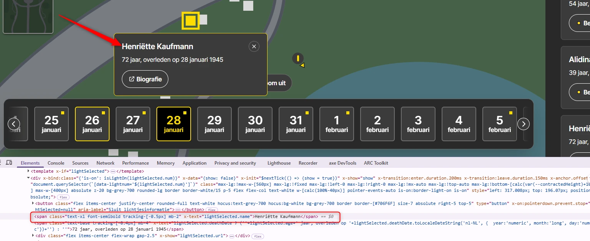
Op deze pagina opent een interactief element met de tekst “Baken” een dialoogvenster. De koptekst in dit venster is niet opgemaakt als kop. Dit probleem doet zich ook voor bij de dialoogvensters die openen via de knoppen “Bekijk dit lichtje” of “Bekijk lichtje”.
Bezoekers die hulpsoftware gebruiken hebben niets aan een (tussen)kop die er wel uitziet als kop, maar niet als kop is gemarkeerd. Via de koppen op een pagina kunnen gebruikers van hulpsoftware de inhoud scannen of snel naar een bepaalde sectie springen. Maar dat kan alleen als de kop ook echt in de code staat. Als koppen alleen visueel als kop zijn vormgegeven (bijvoorbeeld vetgedrukt), ontstaat bovendien nog een ander probleem: de structuur van de informatie in de code wijkt dan af van de visuele structuur.
Oplossing:
Dit voorkom je door koppen altijd te markeren met het juiste HTML-element, op het juiste kopniveau: h1, h2, h3, h4, h5 of h6.
Hetzelfde probleem wordt gezien bij koppen als "Deze dag brandt er 1 lichtje" boven de zoekresultaten en bij namen van personen in de zoekresultaten.
#9 - Animatie speelt automatisch af
Impact: MediumType: ContentWCAG: 2.2.2EN: 9.2.2.2
Wanneer de website wordt geopend op de dag wanneer iemand is overleden, blijft het lichtje van deze persoon ‘branden’. Deze animatie begint automatisch, duurt langer dan 5 seconden en kan niet worden gepauzeerd of gestopt.
Het kan storend zijn voor mensen met een cognitieve beperking als een video, GIF of animatie op een website automatisch gaat spelen. De bewegende inhoud zorgt voortdurend voor afleiding terwijl ze de tekst op de pagina proberen te lezen.
Oplossing:
Er moet een manier zijn voor bezoekers om dit soort multimedia te stoppen, pauzeren of verbergen. Dit geldt voor alle bewegende, knipperende, scrollende of automatisch actualiserende content die tegelijk met andere informatie wordt getoond, automatisch start en langer dan 5 seconden speelt.
#10 - Interactief element mist de toegankelijke rol, naam en is niet met toetsenbord te bedienen
Op deze pagina heeft de knop met een afbeelding van het baken niet de juiste toegankelijke rol, ontbreekt een toegankelijke naam en is het niet bedienbaar via het toetsenbord. Hierdoor kunnen schermlezers en andere hulpsoftware het element niet als knop herkennen en het doel ervan niet begrijpen.
Bezoekers die uitsluitend met het toetsenbord navigeren kunnen deze knop niet activeren.
Om dit element te vinden, zoom in op een gebied van de kaart dat ver van het baken ligt; er verschijnt dan een geel pictogram met een pijl.
Oplossing:
Gebruik het <button> element dat automatisch de juiste toegankelijke rol heeft en standaard via het toetsenbord bedienbaar is.
Voorzie de knop van een duidelijke toegankelijke naam, bijvoorbeeld via verborgen tekst, een aria-label of een andere geschikte techniek.
Zorg ervoor dat de knop focusbaar en activeerbaar is met het toetsenbord (via de Tab- en Enter/Spatie-toetsen).
#11 - Een informatieve afbeelding heeft geen tekstalternatief
Impact: MediumType: ContentWCAG: 1.1.1EN: 9.1.1.1
In de kalender hebben sommige datums een geel stipje dat aangeeft dat er op die dag een lichtje is. Deze gele stip heeft geen tekstalternatief. Dit stipje is toegevoegd als een pseudo-element.
Pseudo-elementen zijn ontoegankelijk voor schermlezers, wat betekent dat blinde gebruikers de informatie die door het beeld wordt overgebracht, niet zullen ontvangen.
Oplossing:
Voeg een tekstalternatief toe. Dat kan als een extra span-element met tekst dat verborgen is met sr-only class.
Op deze pagina gaat de focus na de kop eerst naar de kaart en daarna naar de kalender. Een bezoeker die zonder muis navigeert, moet eerst 300+ op de tab toets drukken voordat de focus in de zijkolom komt.
Oplossing:
Het zou beter zijn om de focus eerst naar de zijkolom te sturen zodat een bezoeker meteen kan zoeken naar de juiste persoon.
#13 - Knoppen met dezelfde tekst hebben verschillende functie
Deze pagina bevat meerdere knoppen met dezelfde naam: "Bekijk dit lichtje". Deze knoppen hebben echter verschillende functies (openen van verschillende lichtjes).
Dit is verwarrend voor bezoekers met een schermlezer. Voor hen is het niet duidelijk welk lichtje de knop activeert.
Oplossing:
Voeg de naam van de persoon aan de knop toe. Je kunt deze naam van het scherm verbergen met sr-only class.
Hetzelfde probleem wordt waargenomen in de zoekresultaten. Bijvoorbeeld, voor 21 januari zijn er meerdere links met dezelfde namen "Bekijk lichtje".
#14 - Links met dezelfde tekst maar een andere bestemming
Impact: MediumType: ContentWCAG: 2.4.4EN: 9.2.4.4
In de zoekresultaten worden zoekresultaten gegeven met links met dezelfde naam "Biografie", die naar verschillende bestemmingen leiden. Dit kan verwarrend zijn voor bezoekers met schermlezers.
Oplossing:
Zorg dat links met dezelfde tekst ook naar dezelfde bestemming leiden. Als het om een andere bestemming gaat, moet de linktekst ook anders zijn. Dit kun je oplossen door de namen van personen als verborgen tekst aan deze links toe te voegen.
#15 - Icoon ‘opent in nieuw venster’ heeft geen tekstalternatief
Impact: MediumType: ContentWCAG: 1.1.1EN: 9.1.1.1
Op deze pagina, in de zoekresultaten bevat een link met de tekst “Biografie” een pictogram dat aangeeft dat de link in een nieuw browser-tabblad opent. Dit pictogram heeft echter geen alternatieve tekst. Hetzelfde probleem wordt waargenomen bij links "Biografie" in pop-ups op de kaart.
Hierdoor weet een blinde bezoeker niet dat deze link een nieuwe browsertab zal openen. Dit is belangrijke informatie die als tekst aanwezig moet zijn, zodat een schermlezer het kan voorlezen.
Oplossing:
Dit kun je oplossen met een span-element met tekst “opent in een nieuwe browsertab”.
#16 - Melding over gevonden resultaten wordt niet als een statusbericht voorgelezen
Impact: GrootType: TechniekWCAG: 4.1.3EN: 9.4.1.3
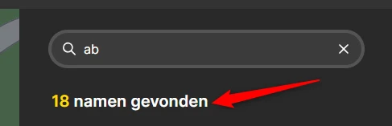
Als een bezoeker een naam invoert in het zoekveld, verschijnt een bericht “X namen gevonden”. Dit is een statusbericht.
Dat zou wel moeten gebeuren. Deze melding is namelijk een statusbericht. Statusberichten moeten automatisch voorgelezen worden door schermlezers zodra ze verschijnen of veranderen, maar de code die dit mogelijk maakt is nog niet toegevoegd.
Oplossing:
Dit kan opgelost worden door role="status" aan dit bericht toe te voegen.
Link naar pagina: https://joodsmonumentamersfoort.nl/contact
strong-element in plaats van kop-element
Impact: MediumType: ContentWCAG: 1.3.1EN: 9.1.3.1
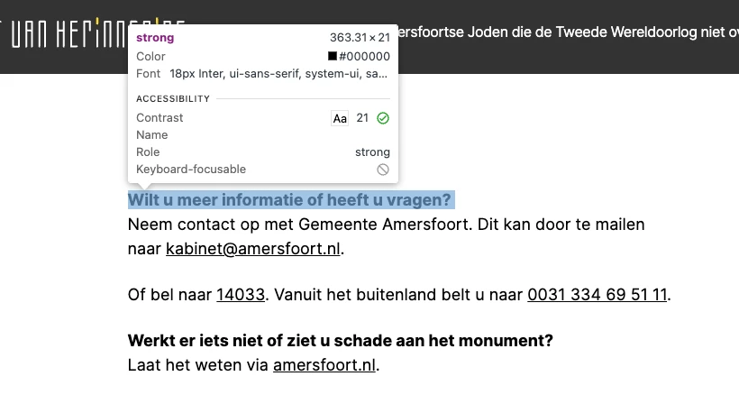
Op deze pagina zijn de volgende teksten onjuist opgemaakt met het strong-element in plaats van met correcte kop-elementen: “Wilt u meer informatie of heeft u vragen?” en “Werkt er iets niet of ziet u schade aan het monument?”
Het strong-element is niet bedoeld om koppen mee te markeren. Je moet dat altijd doen met een kop-element, zoals h2. Koppen gebruik je om een tekst te structureren. Alleen als je ze als kop markeert met een kop-element, begrijpt hulpsoftware die betekenis. Het strong-element gebruik je wel als je nadruk wilt geven aan enkele woorden of een zinsdeel.
Oplossing:
Verwijder het strong-element en gebruik de juiste kop-elementen om deze koppen te markeren, zoals h2 of h3.
Link naar pagina: https://joodsmonumentamersfoort.nl/over-het-monument
strong-element is gebruikt voor opmaak
Impact: KleinType: ContentWCAG: 1.3.1EN: 9.1.3.1
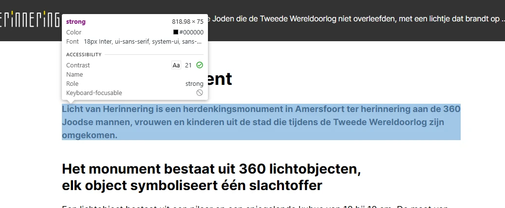
Op deze pagina, onder de kop “Over het monument”, wordt het strong-element onjuist gebruikt voor opmaakdoeleinden. Hele zinnen zijn in een strong-element geplaatst om ze vet te maken.
Het strong-element heeft een semantische waarde: het geeft een bepaalde betekenis aan de tekst die erin staat. Dit element geeft aan dat de tekst extra nadruk moet krijgen. Om die reden mag dit element niet gebruikt worden om *alleen* een visueel effect te bereiken (vetgedrukte tekst).
Oplossing:
Verwijder de strong-elementen en gebruik CSS om de tekst vet te maken.
#17 - Kop-element gebruikt voor tekst die geen kop is
Impact: KleinType: ContentWCAG: 1.3.1EN: 9.1.3.1
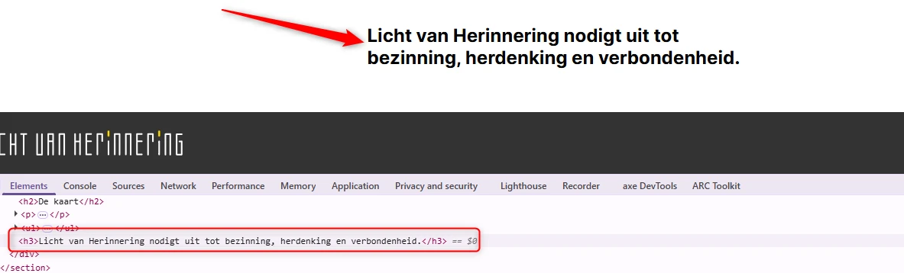
De tekst "Licht van Herinnering nodigt uit tot bezinning, herdenking en verbondenheid." op deze pagina is geen koptekst, maar is ten onrechte gemarkeerd met een h3 element om het lettertype te vergroten.
Het kop-element (h3) is niet betekenisvol gebruikt, maar alleen om een *visueel* effect te bereiken. De tekst die als kop is gemarkeerd, is geen echte kop. Er staat namelijk geen inhoud onder. Maar door het h3-element krijgt de tekst wel deze betekenis. Kop-elementen zijn bedoeld om structuur te geven aan de informatie op een pagina. Mensen die schermlezers gebruiken, vertrouwen op de koppen om door de pagina te navigeren en de opbouw te begrijpen. Gebruik kop-elementen daarom niet alleen om een visueel effect te bereiken, zoals een grotere, schuin- of vetgedrukte tekst. Zorg dat de tekst die je in een kop-element zet ook echt de functie van kop of tussenkop heeft.
Oplossing:
Verwijder het h3-element en gebruik een ander element, zoals een p-element. De gewenste stijl kun je met CSS toevoegen.
Link naar pagina: https://joodsmonumentamersfoort.nl/informatie-over-onthulling-licht-van-herinnering
#18 - SC 1.3.1 strong-element is gebruikt voor opmaak
Impact: KleinType: ContentWCAG: 1.3.1EN: 9.1.3.1
Op deze pagina, onder het kopje "Informatie over onthulling Licht van Herinnering", worden de strong-elementen misbruikt voor stylingdoeleinden.
Het strong-element heeft een semantische waarde: het geeft een bepaalde betekenis aan de tekst die erin staat. Dit element geeft aan dat de tekst extra nadruk moet krijgen. Om die reden mag dit element niet gebruikt worden om alleen een visueel effect te bereiken (vetgedrukte tekst).
Oplossing:
Verwijder de onnodige strong-elementen en gebruik CSS om de tekst vet te maken.
#19 - Taalwisseling ontbreekt op anderstalige content
Impact: MediumType: ContentWCAG: 3.1.2EN: 9.3.1.2
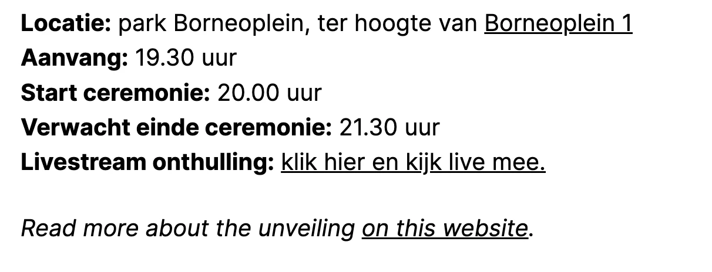
Op deze pagina staat een zin in een andere taal zonder taalcode.
Deze tekst wordt nu voorgelezen volgens de uitspraakregels van de primaire taal van de pagina. Die is ingesteld in het lang-attribuut op het html-element, in dit geval op “nl”. De schermlezer zou juist op de taal van de zin moeten overschakelen. Dat bereik je door deze anderstalige inhoud een lokaal lang-attribuut te geven met de juiste waarde.
Oplossing:
Voeg een lang-attribuut met de juiste taalcode toe aan het html-element dat de tekst in een andere taal bevat. Als de tekst bijvoorbeeld in het Engels is, voeg je lang="en" toe aan het element.
Link naar pagina: https://joodsmonumentamersfoort.nl/in-beeld
#20 - SC 1.1.1 Alternatieve tekst van een informatieve afbeelding is leeg
Impact: MediumType: ContentWCAG: 1.1.1EN: 9.1.1.1
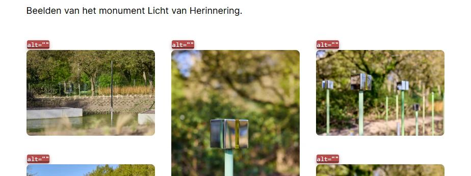
Op deze pagina staan onder het kopje "In beeld" informatieve afbeeldingen met lege alt-attributen.
Afbeeldingen die informatie overdragen moeten een tekstalternatief hebben. De alternatieve tekst mag dus niet leeg zijn. Hierdoor kan een schermlezer de informatie uit de afbeelding overbrengen aan een blinde bezoeker.
Oplossing:
Voeg een beschrijvende alternatieve tekst toe aan het alt-attribuut.
Link naar pagina: https://joodsmonumentamersfoort.nl/colofon
strong-element in plaats van kop-element
Impact: KleinType: ContentWCAG: 1.3.1EN: 9.1.3.1
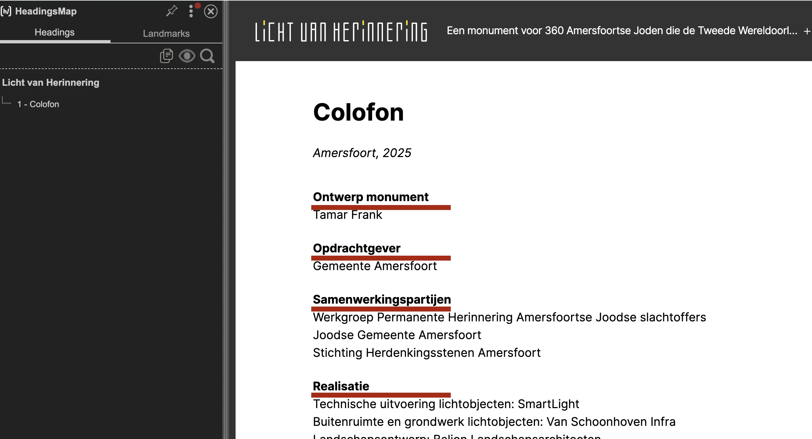
Op deze pagina zijn de volgende teksten ten onrechte gemarkeerd met strong-element in plaats van met de juiste kopteksten: "Ontwerp monument", "Opdrachtgever", "Samenwerkingspartijen" en anderen.
Het strong-element is niet bedoeld om koppen mee te markeren. Je moet dat altijd doen met een kop-element, zoals h2. Koppen gebruik je om een tekst te structureren. Alleen als je ze als kop markeert met een kop-element, begrijpt hulpsoftware die betekenis. Het strong-element gebruik je wel als je nadruk wilt geven aan enkele woorden of een zinsdeel.
Oplossing:
Verwijder het strong-element en gebruik de juiste kop-elementen om deze koppen te markeren, zoals h2 of h3.
Gebruik de “Headingmap” extentie in Google Chrome om zelf de pagina te controleren op het gebruik van koppen.
Over dit onderzoek
Leeswijzer
Onze rapporten zijn anders. Bij het bespreken van de gevonden problemen volgen wij niet de structuur van de norm, maar die van jouw website of app. Hierdoor kun je gewoon per pagina of scherm aan de slag gaan. Wel zo makkelijk! Je vindt verderop een overzicht van alle pagina’s met problemen.
We geven je bij elk gevonden issue een paar voorbeelden, maar niet een complete lijst. Controleer zelf of het probleem ook nog op andere plekken voorkomt. Zie het rapport als een leidraad.
Gebruikte norm
Dit onderzoek laat zien in hoeverre de website op dit moment voldoet aan WCAG 2.2, niveau A en AA. WCAG staat voor Web Content Accessibility Guidelines. Dit is de internationale norm voor digitale toegankelijkheid. De Europese norm EN 301 549 bevat alle eisen van WCAG op niveau A en AA.
In dit rapport hebben we korte beschrijvingen van de succescriteria uit de norm opgenomen, met een algemene uitleg erbij. Wil je ze helemaal lezen? Bekijk dan de documentatie van WCAG.
Gebruikte onderzoeksmethode
We gebruiken de onderzoeksmethode WCAG-EM van het W3C. Het proces ziet er als volgt uit:
vaststellen wat binnen en buiten scope valt
vaststellen welke technologieën zijn gebruikt
steekproef (sample) samenstellen
steekproef onderzoeken
gevonden issues beschrijven
Het grootste deel van het onderzoek doen we met de hand. Voor een deel van de toegankelijkheidseisen gebruiken we automatische tools als ondersteuning, zoals axe-core en Chrome Developer Tools.
Belangrijk om te weten
Dit rapport helpt je om de toegankelijkheid van je website te verbeteren. Maar let op: het is geen definitieve, volledige lijst van alle aanwezige toegankelijkheidsproblemen. Dat zit zo:
Het is een steekproef
Ten eerste is het onderzoek gebaseerd op een steekproef. Die is op een betrouwbare manier genomen, en de meeste problemen zullen daardoor zeker aan het licht komen. Toch kan een probleem net buiten de steekproef vallen. Bij een volgend onderzoek kan het wel ontdekt worden.
Op basis van falsificatie
We beoordelen vanuit het principe van falsificatie. Dat houdt in dat we proberen te bewijzen dat iets niet waar is, in plaats van te bevestigen dat het klopt. ‘Voldoet’ betekent daarom dat we geen reden hebben gevonden om een punt af te keuren. Maar als we later wél een reden vinden, kan het alsnog worden afgekeurd.
Voortschrijdend inzicht
Het komt voor dat de beoordeling van een succescriterium op detailniveau verandert. De norm beschrijft namelijk niet élk mogelijk scenario. Samen met andere onderzoeksbureaus overleggen we hoe we met bepaalde situaties omgaan. Zo kan iets dat nu wordt afgekeurd, soms bij een volgend onderzoek worden goedgekeurd en andersom.
Oplossen leidt tot nieuw probleem
Ten slotte kan het gebeuren dat bij het oplossen van een probleem onbedoeld een nieuw toegankelijkheidsprobleem ontstaat. Dat komt dan bij een volgend onderzoek pas naar voren.
Hoe werkt dit rapport?
Bevindingen bekijken en filteren
Alle gevonden toegankelijkheidsproblemen staan onder Gevonden problemen. Je kunt de bevindingen filteren op:
Impact (Groot, Medium, Klein, Advies) — hoe ernstig is het probleem voor de gebruiker?
Type (Content, Techniek) — moet de inhoud of de techniek worden aangepast?
Status (Open, Opgelost) — welke problemen zijn al verholpen?
Voortgang bijhouden
Je kunt je voortgang op twee manieren bijhouden:
CSV-export — exporteer alle bevindingen als CSV-bestand en laad het in een (online) spreadsheet om met je team samen te werken.
Jira-export — exporteer alle bevindingen als Jira-compatibel CSV-bestand. Importeer het via Jira > Issues > Import issues from CSV. Bevindingen worden aangemaakt als bugs met prioriteit op basis van impact.
Registreer in de browser — activeer deze optie om per bevinding bij te houden of het is opgelost. Je voortgang wordt opgeslagen in je browser. Niemand anders kan je resultaat zien. Let op: de voortgang is gekoppeld aan je browser. Als je een andere browser of een ander apparaat gebruikt, begint de telling opnieuw.
Plan van aanpak — download een geprioriteerd plan van aanpak om de gevonden problemen stap voor stap op te lossen. Dit is beschikbaar bij audits vanaf maart 2026.
Link naar een specifieke bevinding delen
Bij elke bevinding verschijnt een link-icoon wanneer je er met de muis overheen gaat. Klik op dit icoon om de directe link naar die bevinding te kopiëren. Je kunt deze link plakken in een e-mail of chatbericht, bijvoorbeeld om een vraag te stellen aan Proper Access over een specifiek punt.